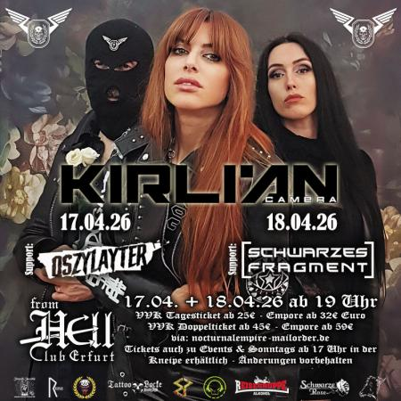

18
Apr
2026
Live-Support für Kirlian Camera
Kirlian Camera · Schwarzes Fragment
Club From Hell · Erfurt
Vergangen
Der Abend
Am Samstag, den 18. April 2026 spielten wir das bis dahin größte Konzert unserer Bandgeschichte.
Wir eröffneten den Abend für Kirlian Camera im Club From Hell in Erfurt.
„Kommt früh. Bleibt laut. Wir sehen uns im Dunkeln."
Eindrücke vom Konzert

Lineup
- Kirlian Camera Dark Wave / Electro kirliancamera.com
- Schwarzes Fragment Support · Dark Electro / EBM schwarzes-fragment.de
Wo & Wann
Club From Hell
Flughafenstraße 41
99092 Erfurt · Deutschland
Samstag, 18. April 2026
Beginn 20:00
Wer ist Schwarzes Fragment?
Schwarzes Fragment ist das live-erprobte Dark-Electro-/EBM-Projekt aus München & Leipzig — melodisch, energetisch, tanzflächentauglich.